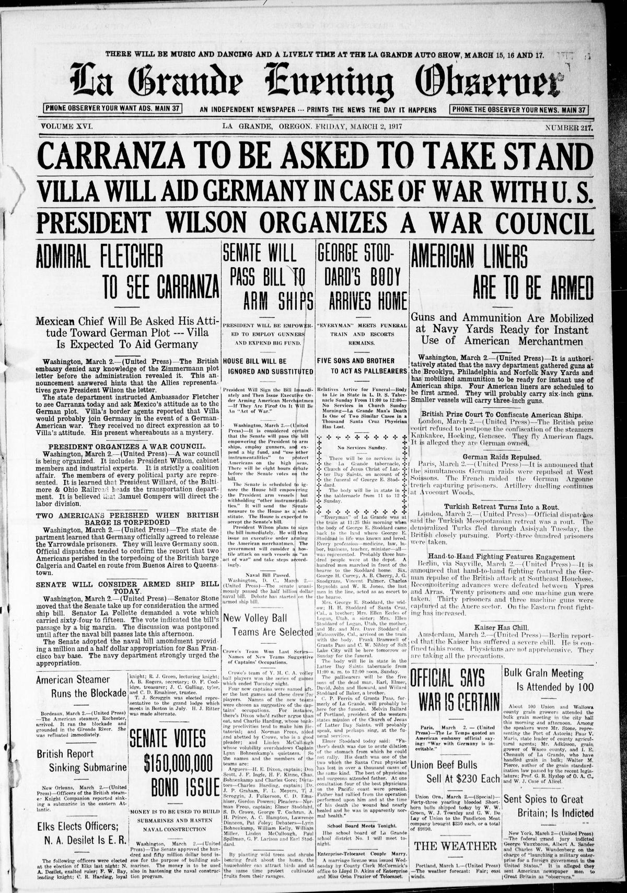
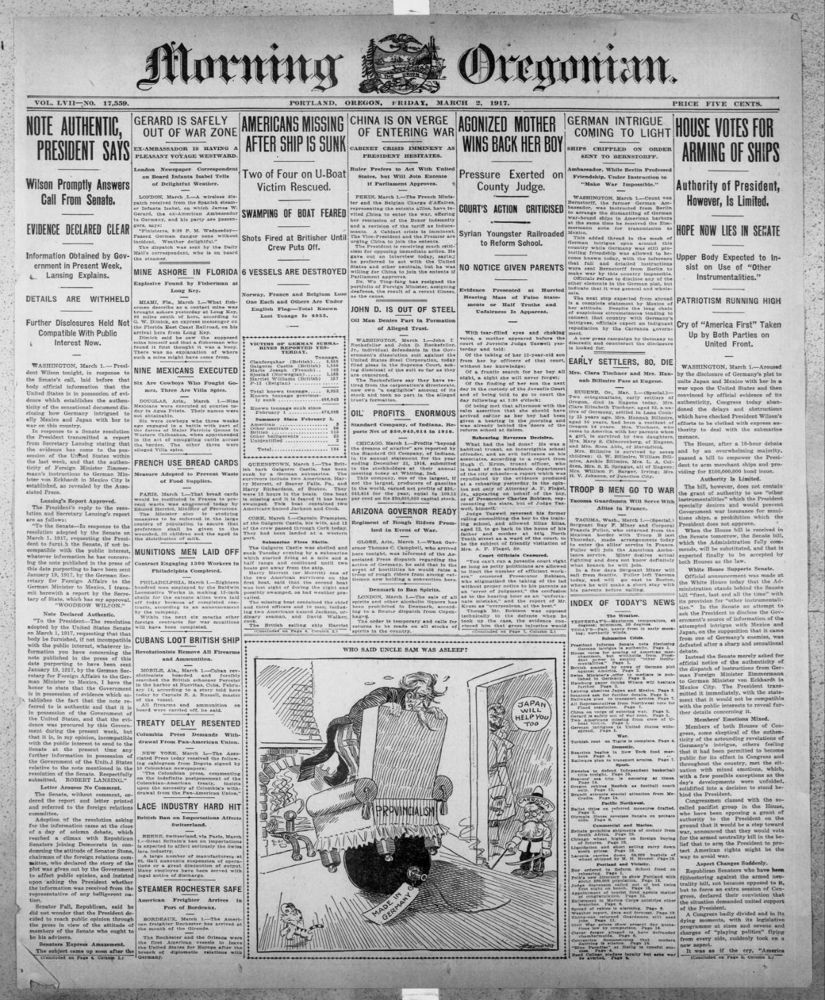
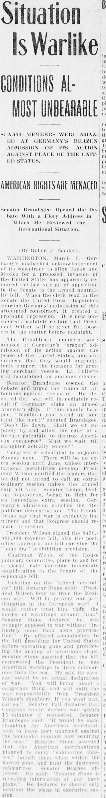

HN HN-404 · March 1, 1917 · War, Conflict & Security > Espionage, Sabotage & Intelligence > Spying
Source: Indianapolis News, p. 1 — original page; U.S. State Department history.
Report: An extra-edition headline said Washington was startled by a German effort to involve Mexico and Japan in a conflict with the United States; it described shifting congressional support for President Wilson. Some subheadings amplified the episode into a broad plan for world domination.
Assessment: The State Department documents the authentic January 1917 Zimmermann Telegram, intercepted and decrypted by Britain. The proposal sought a German-Mexican alliance if the United States entered the war; sensational assertions about Germany's entire imagined world-conquest program should be distinguished from the message's actual terms.
Authentic scans retrieved from Historic Oregon Newspapers (University of Oregon). Article crops are located using the archive's own ALTO OCR word coordinates and rendered at native crop resolution; page scans are 1,200-pixel-wide renditions. No images were generated, mocked, or retouched.



Not yet acquired. Queued for provider-specific acquisition testing (see source-acquisition manifest).
URL (preserved verbatim): https://newspapers.library.in.gov/?a=d&d=INN19170301-01.1.1
Saved research report: Historical_Newspaper_Event_Research_403-427_2026-10-23.md
Evidence note: A newspaper report means a historical publication made a claim; it does not establish that claim as fact. Contemporary reporting is separated from later scholarly context and our own assessment.